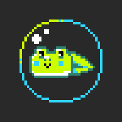

<gj-page-header
	spotlight-dark="true"
	>

	<gj-page-header-content>
		<h1 translate translate-params-channel="channelCtrl.channel">
			Devlogs
		</h1>
		<div class="small text-muted" translate>
			Find the latest and greatest games in development and follow their devlog feeds!
		</div>
	</gj-page-header-content>

	<gj-page-header-spotlight>
		
	</gj-page-header-spotlight>

	<gj-page-header-nav>
		<nav class="platform-list inline">
			<ul>
				<li>
					<a ui-sref="discover.devlogs.overview" ui-sref-active="active">
						<span translate>Overview</span>
					</a>
				</li>
				<li>
					<a ui-sref="discover.devlogs.games._fetch" ui-sref-active="active">
						<span translate>Games</span>
					</a>
				</li>
			</ul>
		</nav>
	</gj-page-header-nav>

</gj-page-header>

<ui-view></ui-view>
